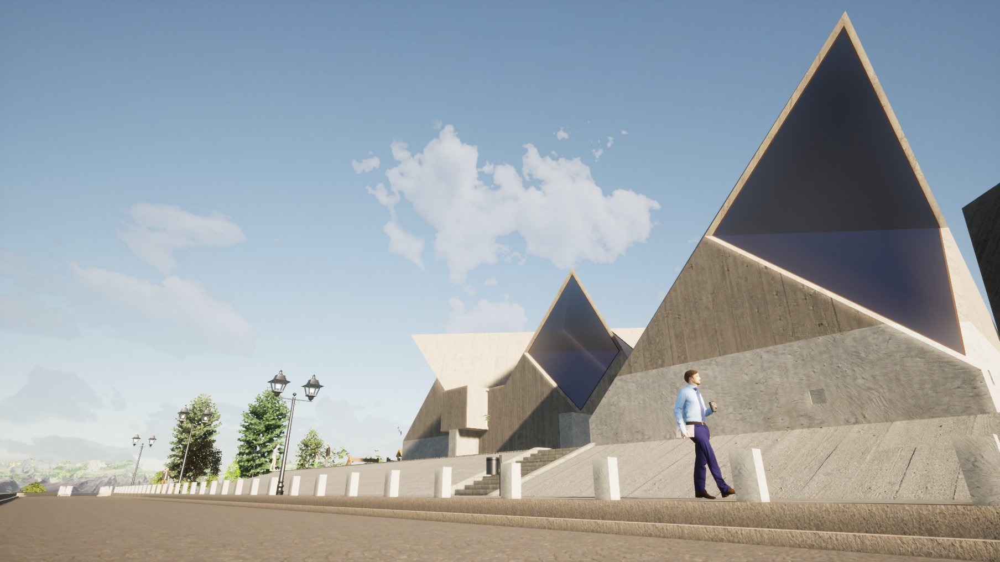
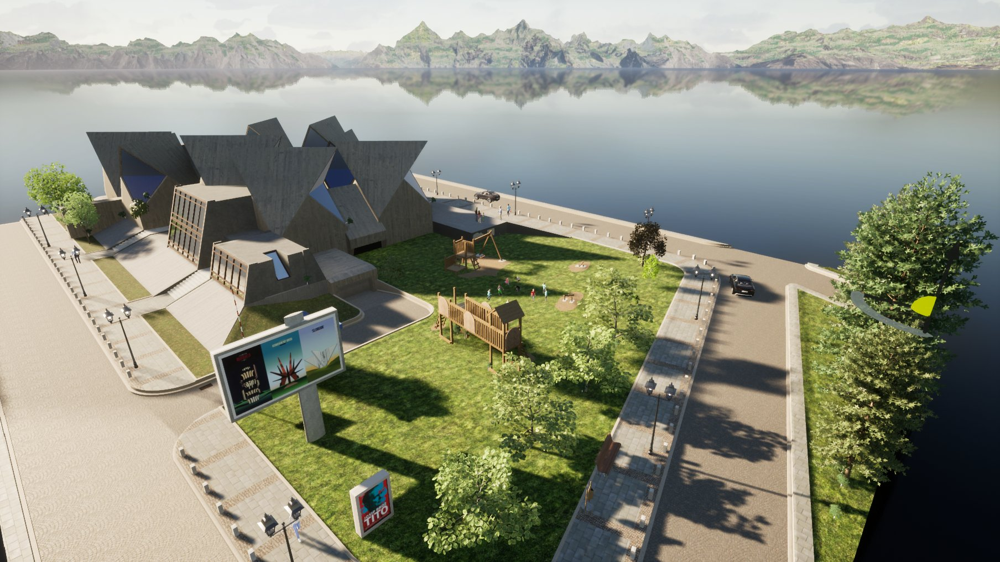
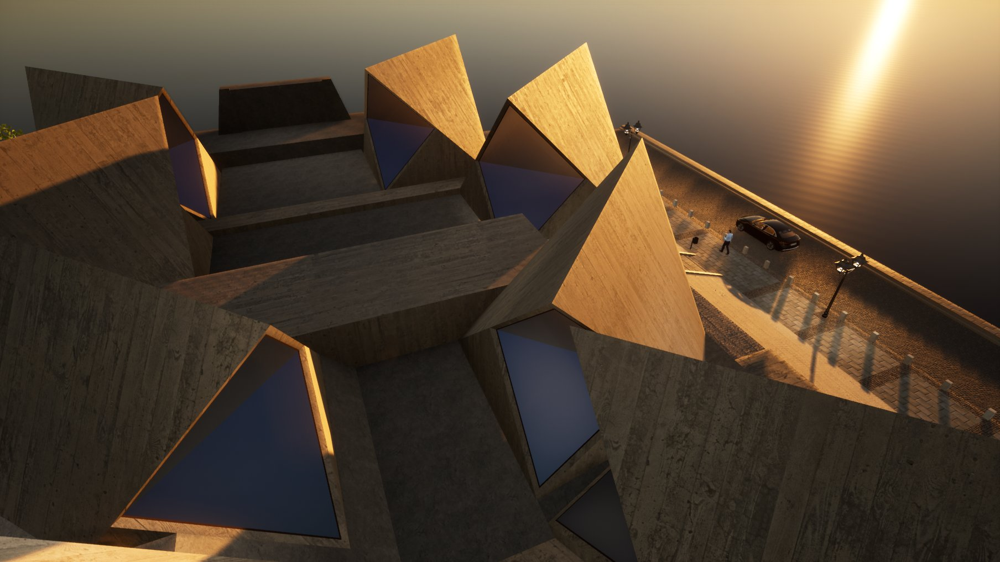
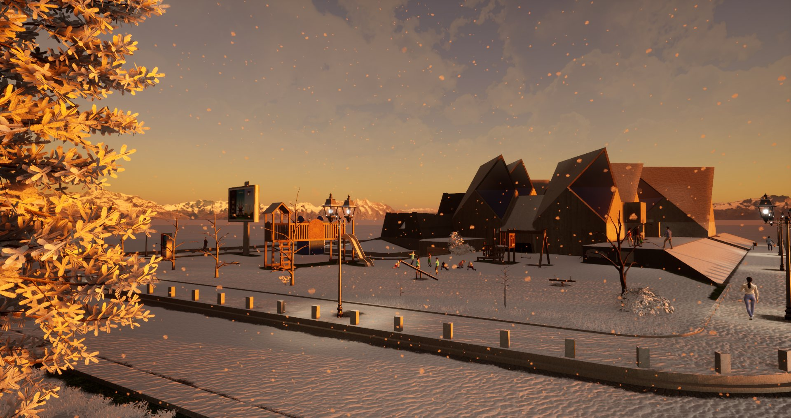
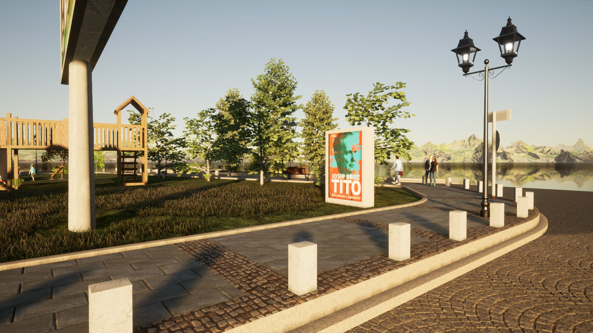
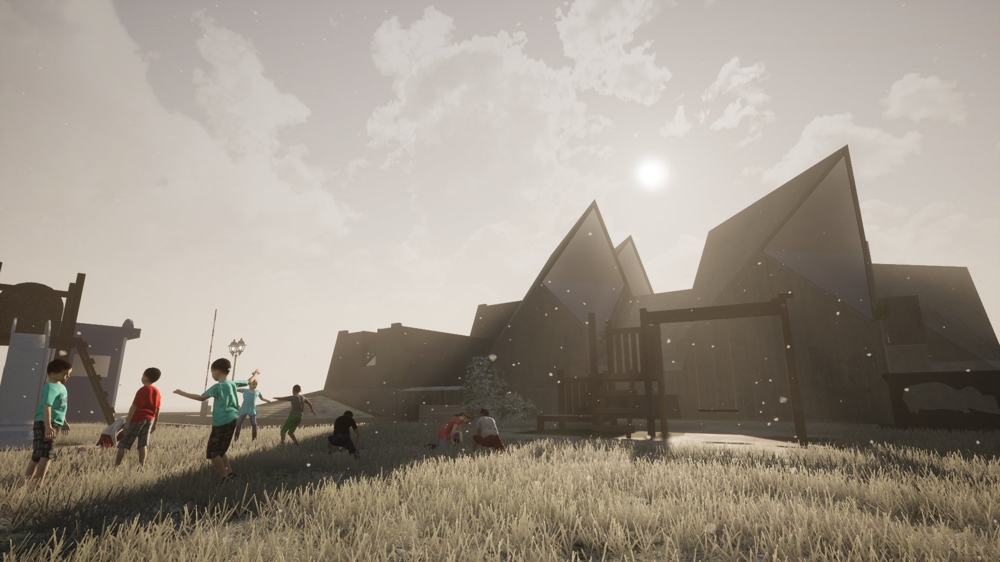
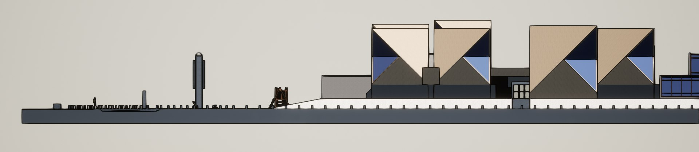

One building in particular, a memorial and cultural center in Kolasin, Montenegro named the Spomen Dom, caught my attention. Not only was it a staunch symbol of anti-fascism during WWII, but the building’s eventual dilapidated condition in some sense represented Yugoslavia’s collapse as a country. Just as many of the current Balkan countries hint of a past that is unified and spirited, the vernacular architecture in the center’s roofscape acts as a testament to how the Spomen Dom allowed for the amalgamation of Montenegro into the Anti-Fascist Council for the National Liberation of Yugoslavia.
These historical and architectural connections motivated me to model the Spomen Dom. Using google maps and building blueprints, I outlined the structure in SketchUp before rendering it in TwinMotion in order to texture the surfaces. It remains one of my proudest digital reconstructions.
3D Model
Drag to orbit, scroll to zoom
Renders





Cross Section
